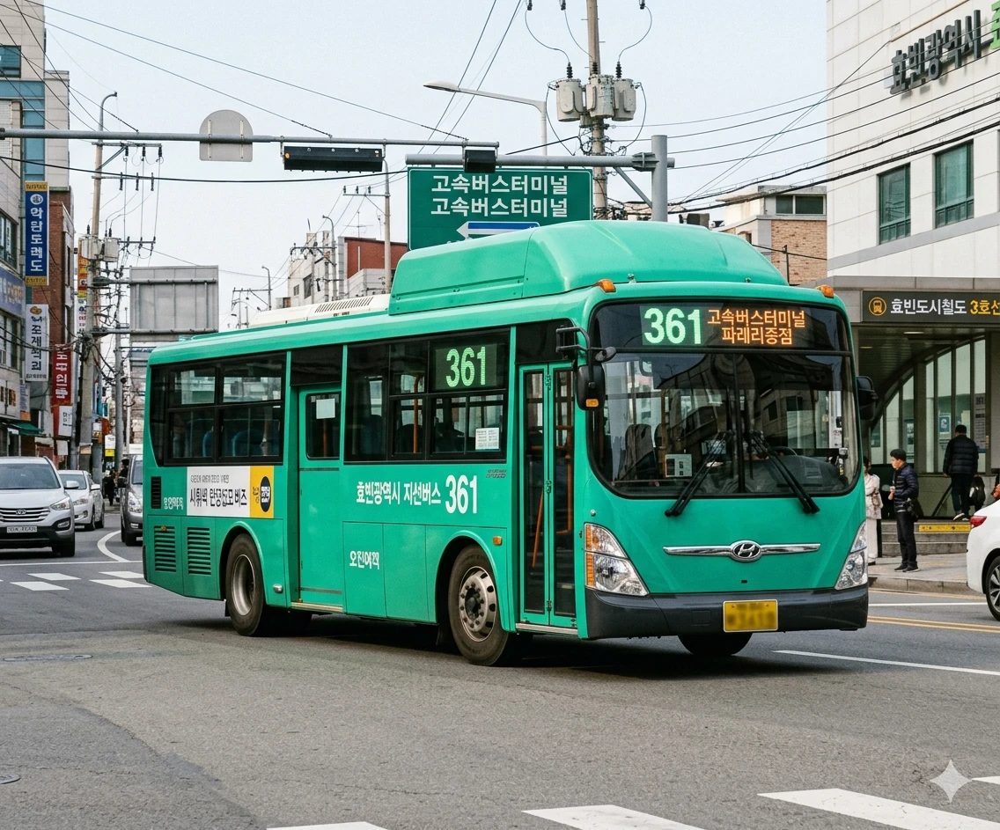

효빈광역시 관내 도로 목록 (ㅌ)
문서
토론
편집
역사
분류:
효빈광역시 | 도로 | 교통 | ㅌ목록
초성 이동:
ㄱ (50)
ㄴ (17)
ㄷ (19)
ㄹ (2)
ㅁ (12)
ㅂ (14)
ㅅ (34)
ㅇ (77)
ㅈ (28)
ㅊ (29)
ㅋ (2)
ㅌ (5)
ㅍ (19)
ㅎ (35)
기타 (5)
| 사진 | 도로명 | 노선 색상 | 총 연장 | 기점 | 종점 | 경유 행정구역 | 경유 버스 | 주요 시설물 |
|---|---|---|---|---|---|---|---|---|

|
탄성군청로 |
#7777aa |
7892m | 효빈광역시 탄성군 탄성읍 무성리 | 효빈광역시 탄성군 야진읍 신리 | 효빈광역시 탄성군 탄성읍 무성리 | 효빈광역시 탄성군 탄성읍 탄성리 | 효빈광역시 탄성군 탄성읍 공리 | 효빈광역시 탄성군 야진읍 신리 | 급행버스06, 급행버스07, 순환버스60, 광역버스1000, 광역버스6000, 좌석버스1111, 좌석버스6666, 공항버스A03, 간선버스16, 간선버스26, 간선버스36, 간선버스46, 간선버스56, 간선버스 66, 간선버스68, 지선버스141, 지선버스161, 지선버스261, 지선버스262, 지선버스 361, 지선버스461, 지선버스561, 지선버스162, 지선버스362, 지선버스661, 지선버스691, 지선버스692, 마을버스 야진01, 마을버스 탄성02, 마을버스 탄성01, 마을버스 도변01 | 탄성경찰서, 탄성우체국, 탄성초, 탄성중, 탄성여중, 공리공원, 공리안단테아파트, 공리에브리아파트, 버거킹 탄성점 |
| 탄성남북로 |
#7777aa |
19138m | 효빈광역시 탄성군 탄성읍 고무리 | 효빈광역시 탄성군 서목읍 음일리 | 효빈광역시 탄성군 탄성읍 고무리 | 효빈광역시 탄성군 탄성읍 탄성리 | 효빈광역시 탄성군 탄성읍 공리 | 효빈광역시 탄성군 탄성읍 미성리 | 효빈광역시 탄성군 탄성읍 성규리 | 효빈광역시 탄성군 서목읍 서목리 | 효빈광역시 탄성군 서목읍 입리 | 효빈광역시 탄성군 서목읍 승남리 | 효빈광역시 탄성군 서목읍 일회리 | 효빈광역시 탄성군 서목읍 파래리 | 효빈광역시 탄성군 서목읍 음일리 | 급행버스06, 급행버스07, 순환버스60, 광역버스1000, 좌석버스1111, 좌석버스6666, 공항버스A03, 간선버스16, 간선버스26, 간선버스36, 간선버스46, 간선버스56, 간선버스 66, 간선버스67, 지선버스161, 지선버스261, 지선버스262, 지선버스 361, 지선버스461, 지선버스561, 지선버스162, 지선버스362, 지선버스661, 지선버스671, 지선버스672, 지선버스681, 지선버스691, 마을버스 탄성02, 마을버스 탄성01, 마을버스 서목01, 마을버스 서목02 | 명채공원, 1호선 승남차량기지, 승남비치아파트, 승남해수욕장역, 승남주공아파트, 탄성읍행정복지센터, 탄성역, 승남더센트럴아파트, 탄성 안브리아 아파트, 상운아파트, 서목역, 탄성 아쿠아아파트, 탄성소방서, 맥도날드 탄성 DT, 탄성공원, 탄성군청, 야진입구역, 탄성보건소, 탄성군보건소 | |
| 탄성역로 |
#7777aa |
3734m | 효빈광역시 탄성군 탄성읍 고무리 | 효빈광역시 탄성군 탄성읍 탄성리 | 효빈광역시 탄성군 탄성읍 고무리 | 효빈광역시 탄성군 탄성읍 탄성리 | 급행버스06, 순환버스60, 간선버스16, 간선버스26, 간선버스46, 간선버스 66, 간선버스67, 지선버스161, 지선버스162, 지선버스362, 지선버스661, 마을버스 탄성02, 마을버스 탄성01 | 고무중 | |

|
탄성중앙로 |
#7777aa |
2540m | 효빈광역시 탄성군 흑택면 명현리 | 효빈광역시 탄성군 탄성읍 명무리 | 효빈광역시 탄성군 흑택면 명현리 | 효빈광역시 탄성군 탄성읍 명무리 | 효빈광역시 탄성군 탄성읍 탄성리 | 급행버스06, 순환버스60, 좌석버스1111, 간선버스14, 간선버스16, 간선버스26, 간선버스46, 간선버스67, 간선버스69, 지선버스161, 지선버스261, 지선버스162, 지선버스671, 지선버스672, 지선버스681, 지선버스691, 마을버스 탄성02, 마을버스 탄성01 | 탄성고 |
|
 |
탄성해안로 |
#7777aa |
6063m | 효빈광역시 탄성군 탄성읍 고무리 | 효빈광역시 탄성군 서목읍 서목리 | 효빈광역시 탄성군 탄성읍 고무리 | 효빈광역시 탄성군 탄성읍 무성리 | 효빈광역시 탄성군 탄성읍 명무리 | 효빈광역시 탄성군 탄성읍 성규리 | 효빈광역시 탄성군 서목읍 서목리 | 급행버스06, 급행버스07, 광역버스1000, 간선버스16, 간선버스26, 간선버스 66, 간선버스67, 지선버스 361, 지선버스461, 지선버스162, 지선버스362, 지선버스671, 지선버스681, 마을버스 탄성01, 마을버스 서목01 | 서목고 |